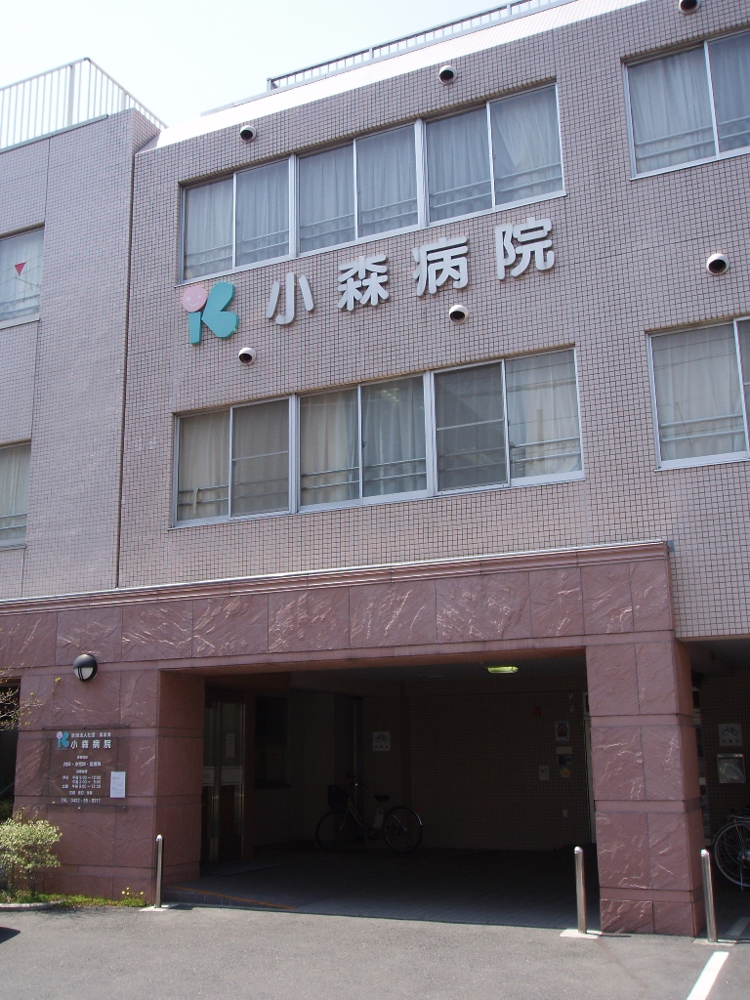

住み慣れた地域で、
その人らしく。
小森病院は東京都武蔵野市にある医療療養型病院（57床）です。長期療養が必要な方を、医師・看護師・看護補助者・介護士・リハビリスタッフが24時間連携して支えます。

療養病床57床 ｜ 入院相談随時受付
入院相談直通: 0422-55-8312（平日9:00〜17:00）
外来診療時間・担当医師
| 受付時間 | 月 | 火 | 水 | 木 | 金 | 土 |
|---|---|---|---|---|---|---|
| 9:00〜12:00 | ○ 酒井 |
○ 矢野 |
○ 市川 |
○ 酒井 |
○ 穂苅 |
○ 岩田 |
| 14:00〜17:00 | ○ 矢野 |
○ 酒井 |
○ 市川 |
－ | ○ 穂苅 |
－ |
※木曜午後・土曜午後・日曜・祝日は休診
※金曜は穂苅先生による内科・神経内科（頭痛外来）
※予約なしでも受診可。お熱や咳の症状がある方は、受診前にお電話をお願いいたします。
※外来受診木曜、土曜は12:30まで受付。
病院からのお知らせ
一覧を見る →令和8年10月15日（木）一般競争入札は終了いたしました。入札業者様要望等が多く対応いただき御礼申し上げます。
院内感染防止対策について
外来・入院の患者様の治療に影響が出ないよう、マスク着用・手指消毒・体温測定・定期消毒などの感染防止対策を徹底しています。ご来院の皆様にはご理解・ご協力をお願いいたします。
小森病院の3つの強み
「第二の我が家」として、患者様お一人おひとりに寄り添い、穏やかで心地よい毎日を支えます。
24時間体制の医療・看護
医師が常駐し、夜間の急な体調変化にも迅速に対応いたします。胃ろう・気管切開など医療処置が必要な方も安心してお任せください。
生活に根差したリハビリ
「もう一度、自分の手でお茶を飲みたい」——日々の生活の喜びを取り戻すための、お一人おひとりに合わせたリハビリを理学療法士が提供します。
ご家族も安心のお看取りケア
最期の時間を「痛みのない、穏やかな時間」にすることをお約束します。ご本人とご家族の想いを最優先に、24時間スタッフが温かく寄り添います。
当院の実績
57
床
医療療養病床
24時間医師常駐
5
名
在籍医師数
常勤・非常勤含む
10+
種類
受入可能な
医療処置・ケア
365
日
面会受付
年中無休 13〜17時
※詳細はお問い合わせください。
医院概要
院長: 酒井 忠司
医師: 5名（岩田・矢野・市川・穂苅）
病床数: 57床（医療療養型）
施設基準: 療養病棟入院基本料Ⅰ
駐車場: 5台（無料）
| 医院名 | 小森病院（コモリビョウイン） |
| 法人名 | 医療法人社団 成友会 |
| 住所 | 〒180-0014 東京都武蔵野市関前3丁目3-15 |
| 代表電話 | 0422-55-8311 |
| 入院相談 | 0422-55-8312（直通） |
| FAX | 0422-53-0480 |
| お支払い | 現金のみ |
入院相談・空床確認はお気軽にどうぞ
「胃ろうや気管切開があっても受け入れてもらえる？」「急性期病院からの転院を考えている」など、専門の相談員が丁寧にご説明します。
お急ぎの方はお電話がスムーズです
0422-55-8312
入院相談直通：平日 9:00〜17:00